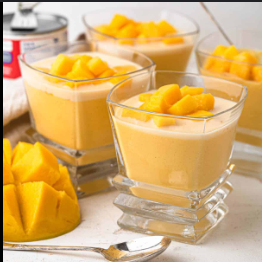

Mango Pudding
⭐⭐⭐⭐☆
4.4 (210 reviews)

Ingredients
Mango cubes 400g
Water as required
Sagudana (Tapioca sago) ½ Cup
Nariyal (Fresh coconut) 50g
Pakola Full cream milk 1 litre
Sugar ½ Cup or to taste
Elaichi powder (Cardamom powder) ½ tsp
Pista (Pistachios) chopped ¼ Cup
Badam (Almonds) chopped ¼ Cup
Aam (Mango) cubes 400g
Directions
In blender jug,add mango and blend to puree mangoes & set aside.
In kettle,add water and bring it to boil.
Add tapioca sago,mix well & cook on medium flame for 12-14 minutes or until transparent then strain,rinse with water & set aside.
Grate fresh coconut with the help of grater & set aside.
In a wok,add milk,sugar,cardamom powder and mix well,bring it to boil and cook on low flame for 4-5 minutes.
Add mango puree and whisk well.
Add grated coconut,pistachios,almonds,mix well and cook on low flame for 4-5 minutes.
Add cooked tapioca sago,mix well and cook for 2-3 minutes.
Let it cool.
Add mango and give it a good mix.
Garnish with mango,pistachio & fresh coconut.
Serve chilled!
Nutrition Facts
Calories: 200 | Protein: 3g | Carbs: 35g | Fat: 6g